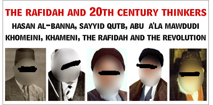

Monday, 18 August 2025
Home
•
About Us
•
Contact Us
HOME
BASICS
SAYYID QUTB
HASAN AL-BANNA
METHODOLOGY
SHAYKH RABEE
REFUTATIONS
ARTICLES
REPORTS
LOGIN
SEARCH
TAGS
RSS
Articles tagged with "Tahkeem al-Qawaaneen"
RSS Feed
Shaykh Saalih al-Fawzaan on Ruling by the Secular Laws and a Rebuttal of the People of Takfir
In his book, "Kitaab ut-Tawheed", Shaykh Saalih al-Fawzaan writes (pp. 49-50): Chapter: The Ruling Upon the One Who Judges by Other Than What Allaah ...
Sunday, December 20 2009 - by
Admin

The Sayings, Verdicts and Rulings of the Scholars of Ahl us-Sunnah Regarding the Doctrines and Books of Sayyid Qutb
(
21
)
Concerning Shaykh Ibn Jibreen's Defence of Hasan al-Banna and Sayyid Qutb
(
6
)
Misguiding the Ummah Through Propaganda For Qutb's Books: An Encyclopedia of the Innovations and Deviations They Contain
(
13
)
The False Comparison Between Hadith Giants Ibn Hajar, an-Nawawi and 20th Century Ignoramuses
(
2
)
Sayyid Qutb and the Aqidah of the Rafidah in Reviling and Abusing the Companions
(
7
)
Sayyid Qutb and the Issue of the Doctrine of 'Wahdat ul-Wujood'
(
4
)
Bayan Talbis al-Qutbiyyah - Explanation of the Deception of the Qutbiyyah
(
4
)
Qutbi Competition Corner - Test Your Aptitude for Defending Baatil
(
1
)
Hasan al-Banna, al-Ikhwan and the Rafidite Shiah
(
3
)
Latest Articles
Shaykh al-Raajihee Declares the Extremist Haddaadiyyah as Liars
Shaykh al-Luhaydan: They Harbour Malice Towards Shaykh Rabee Because He Refutes the Opposers
Shaykh Muqbil bin Haadee: Shaykh Rabee is an Ayah (Sign) in Knowledge of the Hizbiyyeen
Shaykh Muqbil bin Haadee: Shaykh Rabee is Insightful Regarding the Hizbiyyeen and 'Chisels Out' Their Hizbiyyah
Shaykh Muqbil bin Haadee: Shaykh Rabee is From the Taa'ifah Mansoorah and Filters out the Hizbiyyeen
Shaykh Muqbil bin Haadee on Shaykh Rabee: If Shaykh Rabee Says So and So is a Hizbee, Over the Passing of Days, It Will Become Clear That He is a Hizbee
Refutation of the Slander of the Confused Abdullaah al-Farsee Against Shaykh Rabee Regarding the Issue of Iqaamat ul-Hujjah
Shaykh Saalih al-Fawzaan Asked About Whoever Twisted His Speech to Attack Shaykh Rabee: It is From His Own Desire and He Will Bear the Burden of Sin
A Gift to Salman al-Awdah and Safar al-Hawali: Shaykh Salih al-Fawzan: Being Labelled with 'Jaamiyyah' is a Praise and a Tazkiyah
Sayyid Qutb and Ayatollah Kashani (Both Rafidees) and Abu Zubair Saleem Begg and Abu Fatimah Salman Awan (Both Practical Ghulaat al-Murji'ah)
LearnArabic.Com
Search This Site
Other Websites
Takfiris.Com
Most Popular
A Picture Paints (Characterizes) a Thousand Qutbis: Hasan al-Banna, Sayyid Qutb, Abu A'la Mawdudi, the Rafidah and the Iranian Revolution
Sajid Kayum: The Hypocritical Coward Who Runs The Forums of Amwaat.Morg In Which Slanders and Alleged Sins Are Spread About Other Muslims
Readings in Elementary Communism: Karl Marx, Freidrich Engels, Sayyid Qutb, Capitalism, the State, Social Justice, Revolution and the Communist Manifesto
Regarding Abu al-Hasan al-Ma'ribee al-Ikhwani: Why Shaykh Rabee' Was Correct and Shaykh Abdul-Muhsin al-Abbaad Was Wrong (Yet Both Are Rewarded) - Part 1
The Satanic Path of Sajid Kayum's Slanderhouse Forums Evaluated in Light of the Prophetic Sunnah
Muftee Abdul-Azeez Aal al-Shaykh on the Saying of Sayyid Qutb About Mu'awiyyah and Amr bin al-Aas: It is the Saying of a Baatinee Khabeeth or a Yahoodee La'een and is the Epitomy of Nifaaq
The Relationship Between Shaykh Rabee al-Madkhali and the Major Scholars: Part 3 - Imaam Ibn Baz Requesting Shaykh Rabee in Writing To Refute a Denier of Allaah's Attributes
Sayyid Qutb and the Revolution Organized in Egypt Against the Third Khalifah Uthman bin Affaan
Imaam al-Albani to Shaykh Rabee: Everything With Which You Refuted Qutb For Is Correct and True and May Allaah Reward You For Fulfilling The Obligation of Exposing His Ignorance and Deviance
The Words of Imaam Ibn Baz Falling on Those (Qutbiyyah) Who Lied Upon Him (Safar al-Hawali, Salman al-Awdah, Muhammad Sa'eed al-Qahtani, Aa'id al-Qarnee, Abdur-Razzaq ash-Shayijee): Callers of Falsehood and Stirrers of the Murky Waters
Tags
aa'id al-qarnee
aa'id al-qarni
abbaas al-
abbas el-akkad
abd al-aziz aal ash-shaikh
abdul-aziz aal ash-shaikh
abdul-aziz ar-raajihee
abdullaah al-farsee
abdullah al-farsee
abdullah azzam
abdullah bin saba'
abdur-rahmaan abdul-khaaliq
abdur-razzaq ash-shayijee
abu a'la mawdudi
abu al-hasan al-ma'ribee
abu sufyan
ahmad shakir
ahya
al-adaalah al-ijtimaa'iyyah
al-arsh
al-fawzaan
al-fawzan
al-ghazali
al-ghudayan
al-ikwan al-muslimoon
al-istiwaa
al-luhaidan
al-mubarakfuri
al-uluww
albaanee
albani
alexis carrel
algeria
amr khalid
an-nawawi
aqidah
aqqaad
ar-razi
ash'ari
ash'aris
ash'arite
ash'ariyyah
asha'riyyah
asharis
az-zilal
banna
barbarism
bayaan talbis al-qutbiyyah
bayan talbis al-qutbiyyah
christianity
communism
communist manifesto
egypt
excommunication
extremism
faith
fawzan
fi zilal il-qur'an
fi zilal il-quran
fikr
frederick engels
george bush
ghaddafi
ghulaat al-murji'ah
ghuluww
grave worship
haakimiyyah
habib ali al-jifree
hadd
hammad al-ansari
hasan al-banna
hasan al-maalikee
hayyiz
hind
hudood
ibn arabi
ibn baaz
ibn baz
ibn hajar al-asqalani
ibn hajr
ibn jibreen
ibn jibrin
ibn saba al-yahudi
ibn taymiyyah
ibn uthaymeen
ibn uthaymin
ihyaa al-turaath
imaan
in the shade of the qur'an
iranian revolution
irja
irjaa
irjaa'
istibdaal
istihzaa
jaahiliyyah
jahmiyyah
jamaa'at ut-takfir
jameel zainoo
jihah
karl marx
kashani
khabar ul-aahaad
khabar ul-wahid
khameni
kharijites
khawarij
khomeini
khurooj
kufr bawah
leninism
leninists
libya
madaakhilah
madkhali
madkhalis
mahmood shakir
mahmud shakir
makaan
makhlooq
marxism
marxist socialism
mawdudi
milestones
mockery
mohammad qutb
mongols
moosaa
moses
mu'awiyah
mufawwidah
mufawwidh
muhammad al-areefee
muhammad bin ibraaheem
muhammad bin ibrahim
muhammad sa'eed al-qahtani
muqbil bin haadee
muqbil bin hadi
murji'ah
nawab safawi
nawawi
qawaaneen
qawanin
qsep
qur'an
qutb
qutbi
qutbi manhaj
qutbis
qutbiyyah
qutubiyyah
raafidah
rabi al-madkhali
rabi bin hadi al-madkhali
rafidah
rafidah shi'ah
revolutionary ideology
safar al-hawali
sahaabah
sajid kaym
sajid kayum
salafi manhaj
saleem begg
salih aal ash-shaykh
salih al-luhaydan
salman al-aqdah
salman al-awdah
salman awan
saudi
saudi arabia
sayyid qutb
secular law
secular laws
secularism
shaikh rabi
shanqeetee
shanqiti
shaykh abd al-aziz aal ash-shaykh
shaykh abd al-aziz bin baz
shaykh abdul-aziz bin baz
shaykh al-albani
shaykh al-luhaydaan
shaykh al-uthaymin
shaykh ibn jibrin
shaykh ibn uthaymin
shaykh muhammad amaan al-jaamee
shaykh muqbil bin haadee
shaykh muqbil bin hadi
shaykh rabee
shaykh rabee bin haadee
shaykh rabee'
shaykh rabi
shaykh rabi al-madkali
shaykh rabi bin hadi al-madkhali
shi'ites
shiah
shirk
sifaat fi'liyyah
social justice
socialism
soofee
speech of allaah
sufi
sufism
syria
ta'weel
tabdeel
tafweed
tahkeem
tahkeem al-qawaaneen
tahkim al-qawanin
takfeer
takfir
takfiris
takhyeel
tamyee'
tashree'
taswir al-fanni fil-qur'an
tatars
tawhid
tawhid al-haakimiyyah
tawhid al-hakimiyyah
tawhid al-hukm
the companions
ubaydullah al-mubarakfuri
wahdat ul-wujood
zilal
Archives
August 2025
July 2025
June 2025
May 2025
April 2025
March 2025
February 2025
January 2025
December 2024
November 2024
October 2024
September 2024
August 2024
July 2024
June 2024
May 2024
April 2024
March 2024
February 2024
January 2024
December 2023
November 2023
October 2023
September 2023
August 2023
July 2023
June 2023
May 2023
April 2023
March 2023
February 2023
January 2023
December 2022
November 2022
October 2022
September 2022
August 2022
July 2022
June 2022
May 2022
April 2022
March 2022
February 2022
January 2022
December 2021
November 2021
October 2021
September 2021
August 2021
July 2021
June 2021
May 2021
April 2021
March 2021
February 2021
January 2021
December 2020
November 2020
October 2020
September 2020
August 2020
July 2020
June 2020
May 2020
April 2020
March 2020
February 2020
January 2020
December 2019
November 2019
October 2019
September 2019
August 2019
July 2019
June 2019
May 2019
April 2019
March 2019
February 2019
January 2019
December 2018
November 2018
October 2018
September 2018
August 2018
July 2018
June 2018
May 2018
April 2018
March 2018
February 2018
January 2018
December 2017
November 2017
October 2017
September 2017
August 2017
July 2017
June 2017
May 2017
© TheMadkhalis.Com. All rights reserved.
Madkhalis
Madaakhilah
The Madkhalis